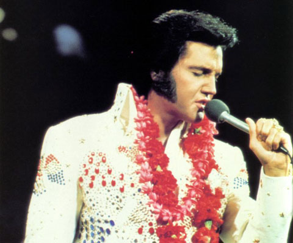

Music Genre
John Patrick Quing listens to Rock Music a music genre that employs sampling techniques, electronic instruments and ethnic sources.It is combination of country music and rhythms n'blues.
History
P. Scaruffi, A History of Rock Music: 1951–2000 (iUniverse, 2003), ISBN 0-595-29565-7